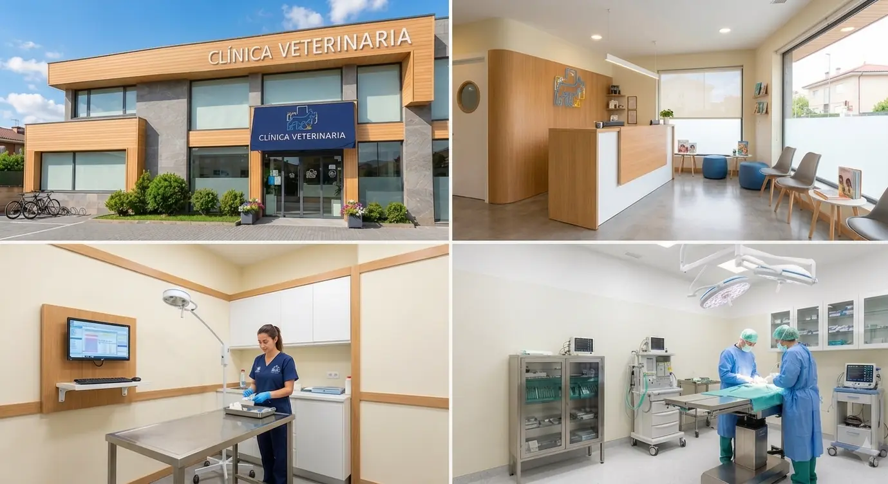

Ubicación y Contacto
Estamos ubicados en la zona norte de la ciudad, en un lugar de fácil acceso para que puedas visitarnos con tus mascotas.
Calle Siempre Viva 123, Concordia, Entre Ríos, Argentina.

| Servicios | Dias de atencion | Horarios | Telefono |
|---|---|---|---|
| Consulta General | Lunes a Viernes | 9:00 AM - 6:00 PM | + 9 11 1234-5678 |
| Cirugias | Lunes a Viernes | 9:00 AM - 6:00 PM | + 9 11 1234-5678 |
| Urgencias | Lunes a Domingos | 6:00 PM - 9:00 AM | +54 9 11 9876-5432 |
| Vacunación | Lunes a Viernes | 9:00 AM - 6:00 PM | + 9 11 1234-5678 |
| Traslados | Lunes a Viernes | 9:00 AM - 6:00 PM | + 9 11 1234-5678 |
| GUARDIA | Viernes, Sabado, Domingos y Feriados | 6:00 PM - 9:00 AM | +54 9 11 9876-5432 |
| Tambien podes contactarnos por e_mail | info@vetrinaria.com | ||